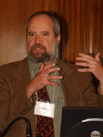
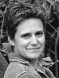

>>Sakai Board Sakai Staff Conference Staff

Joseph Hardin, Chair, University of Michigan
Joseph Hardin is the Director of the Collaborative Technologies Laboratory in the Duderstadt Center, and a Clinical Assistant Professor in the School of Information, at the University of Michigan, Ann Arbor. He is leading the CompreHensive collaborativE Framework (CHEF) project that is developing an open source framework and tools for course management systems, workgroup support, and support of online research, with support from NSF, NIH and the University of Michigan.
Hardin has managed development of online collaboration systems for a good while, including when he was Associate Director of Software Development at the National Center for Supercomputing Applications (NCSA) at the University of Illinois-UC, from the early to the late 90´s. He is also a founder and board member of the International World Wide Web Conference Committee, and is teaching a graduate course on the Semantic Web.
Joseph Hardin is the Director of the Collaborative Technologies Laboratory in the Duderstadt Center, and a Clinical Assistant Professor in the School of Information, at the University of Michigan, Ann Arbor. He is leading the CompreHensive collaborativE Framework (CHEF) project that is developing an open source framework and tools for course management systems, workgroup support, and support of online research, with support from NSF, NIH and the University of Michigan.
Hardin has managed development of online collaboration systems for a good while, including when he was Associate Director of Software Development at the National Center for Supercomputing Applications (NCSA) at the University of Illinois-UC, from the early to the late 90´s. He is also a founder and board member of the International World Wide Web Conference Committee, and is teaching a graduate course on the Semantic Web.
Amitava‘Babi’Mitra, MIT
Dr. Amitava ‘Babi’ Mitra is the Executive Director of Academic Media Production Services (AMPS) at MIT, an organization that provides educational technology services to the MIT community, in support of MIT’s strategic goals. Dr. Mitra has over 18 years of leadership experience in education, including corporate e-learning, publishing and multimedia based training, higher education, and distance education.
Prior to joining MIT, Babi led NIIT, Inc’s $24 million revenue Knowledge Solutions Business, a profitable business unit with over 600 professionals, clients in the US, Europe, Asia and Australia, and a strong process-oriented development approach (among the first in the world to receive ISO 9001 certification in 1993 for instructional development). Babi participated in the formulation of the National Policy on Education released by the Government of India in 1986. He also served as the Chief, Distance Learning Programs Unit, at the Birla Institute of Technology and Science (BITS), Pilani, India, from where he earned his PhD: he was simultaneously a Visiting Engineer at the Department of Chemical Engineering, MIT. Babi also serves on the Council of Governors, Pan Himalayan Grassroots Development Foundation.
 Carl Jacobson, uPortal/JA-SIG
Carl Jacobson, uPortal/JA-SIGCarl Jacobson is Principal Investigator for the Andrew W. Mellon Foundation grant for uPortal development, a member of the JA-SIG Board of Directors, a member of the Sakai Board and an advisor to the OSPI Council. As Direction of Management Information Services at the University of Delaware he managed "first-of-its-kind" efforts to build secure, organized, dependable Web front ends to administrative systems. Carl is an outspoken advocate of re-thinking the roles of the Web and e-business, providing new opportunities to support teaching and research, revamp business practices, and improve customer service. Carl received the 2001 EDUCAUSE Award for Leadership in Information Technology.
 Mara Hancock, University of California, Berkeley
Mara Hancock is the Associate Director for the Learning Systems and Multimedia Services units within Educational Technology Services at University of California, Berkeley. This group provides scalable and sustainable learning environments and web sites to the campus community as well as support activities for faculty integrating technology into their teaching and learning. Prior to her current position, Mara was with DigitalThink, Inc. where she managed a variety of units, including Catalog Course Development; Design, Templates, and Strategy; and Course Maintenance and Quality Improvement. Mara was also a member of the original design team for the launch of UC Extension Online. She is very interested in Human Computer Interaction and social computing and how they impact higher education.